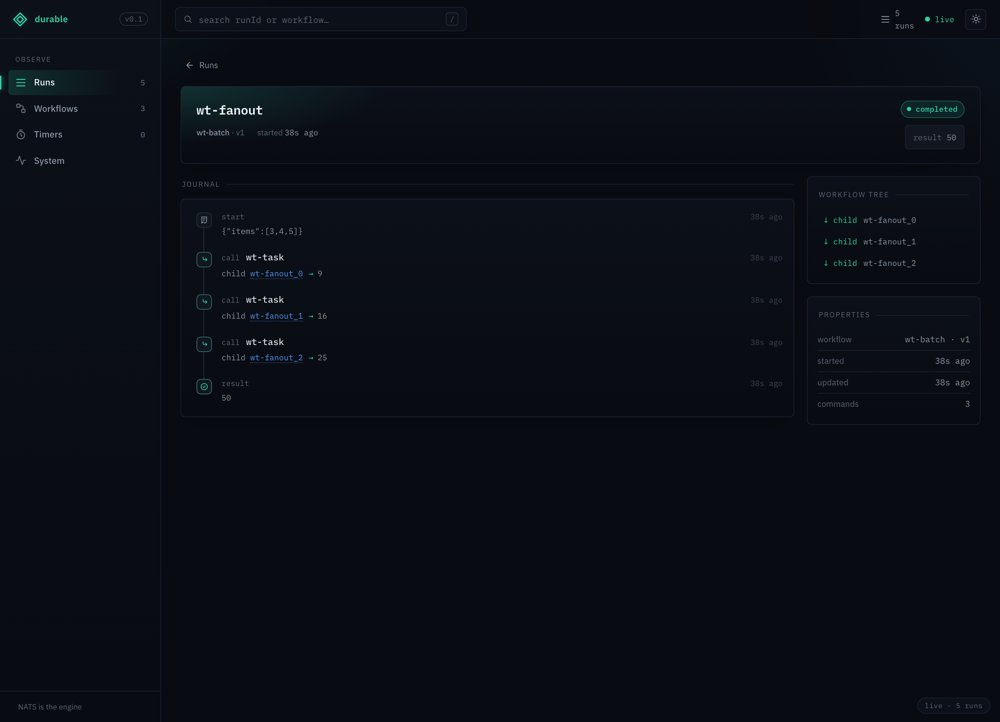
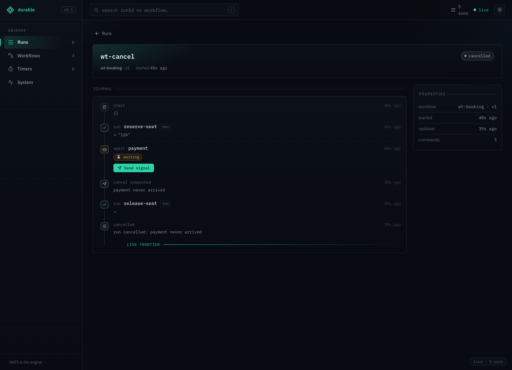

Two capabilities, seen through the dashboard: durable fan-out (run several sub-workflows concurrently and gather them) and cancellation (stop a run, with opt-in compensation). Both are ordinary ctx.* calls journaled like everything else — so the timeline tells the whole story.
Seed the two runs (fixed runIds, so they're addressable for the screenshots below):
shnats-server -js & NATS_URL=nats://127.0.0.1:4222 npm run example:fanout-cancel-demo
#Fan-out: scatter-gather
ctx.startCall starts a sub-workflow without blocking and returns a DurableFuture. Start several, then gather them with a native await Promise.all(...) — every child is launched in one pass, and the run suspends once until all have resolved.
tsconst task = defineWorkflow("wt-task", (ctx, n: number) => ctx.run("square", () => n * n)); const batch = defineWorkflow("wt-batch", async (ctx, input: { items: number[] }) => { const squares = await Promise.all(input.items.map((n) => ctx.startCall(task, n))); return squares.reduce((a, b) => a + b, 0); });
textfan-out result: 50 # 3² + 4² + 5² — three children, run concurrently

The journal shows three call wt-task entries (children wt-fanout_0/_1/_2), and the Workflow tree lists all three children of the parent. They were all started before the Promise.all blocked, so they ran in parallel rather than one-after-another.
Concept — durable fan-out.
ctx.startCall/startSleep/startAwaitreturn aDurableFuture;ctx.call/sleep/awaitare sugar for "start + await one". NativePromise.all/Promise.allSettledwork over futures; for racing usectx.race([...])(it resolves the journal-earliest branch deterministically — nativePromise.raceis unsafe). Each branch resolves from the journal on replay, so fan-out is crash-safe: a child that finished before a crash is never re-run.
#Cancellation + saga compensation
client.cancel(runId) stops a run at its next suspend point — an uncatchable hard-stop (a workflow's try/catch can't swallow it). To clean up, register compensation with ctx.onCancel: it runs before the run reaches the cancelled terminal.
tsconst booking = defineWorkflow("wt-booking", async (ctx) => { const seat = await ctx.run("reserve-seat", () => "12A"); // if cancelled, release the seat (runs before the `cancelled` terminal) ctx.onCancel(() => ctx.run("release-seat", () => console.log("released seat 12A"))); await ctx.await("payment"); // parks here return `booked ${seat}`; }); // …elsewhere: the booking is cancelled while it waits for payment await client.cancel("wt-cancel", { reason: "payment never arrived" });
text[booking] released seat 12A # the onCancel compensation fired cancel status: cancelled

Read the timeline top to bottom: the booking reserved a seat, parked on await payment, then a cancel requested ("payment never arrived") arrived — at which point the run ran its release-seat compensation and reached the cancelled terminal (note the cancelled status pill). Handle.result() on this run rejects with CancelledError.
Concept — layered cancellation.
client.cancelalways works on any run; by default it's an uncatchable hard-stop at the nextctx.*suspend point. Compensation is opt-in viactx.onCancel(handlers run LIFO, exactly-once on replay). Cancellation also cascades to in-flightctx.callchildren and follows a continue-as-new chain. A cancel racing a completion is resolved deterministically by journal order (stream-seq).
#How these shots are made
Screenshots regenerate from a live nats-server + the dashboard:
sh# with NATS up, the demo seeded, and the UI server running: NATS_URL=nats://127.0.0.1:4222 npm run example:fanout-cancel-demo cd apps/ui && PORT=8099 bun run server RUN=wt-fanout SHOT=fan-out bun run capture:run RUN=wt-cancel SHOT=cancellation bun run capture:run
More: the runnable seed is examples/fanout-cancel-demo.ts; the durable fan-out + cancellation design lives in DESIGN.md; the surface tour is in HOW-IT-WORKS.md.